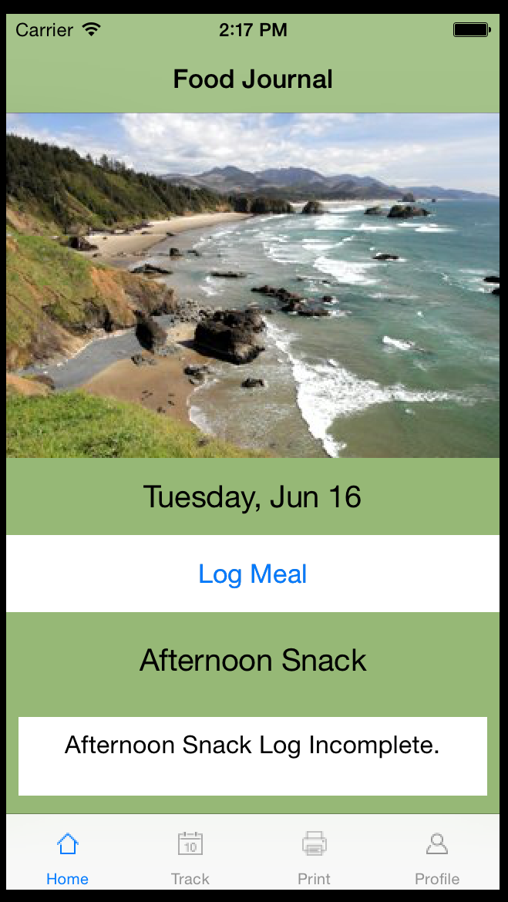
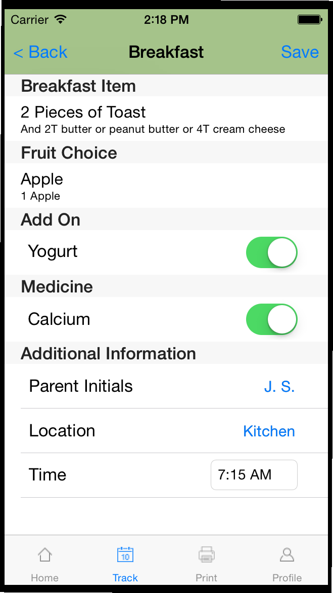
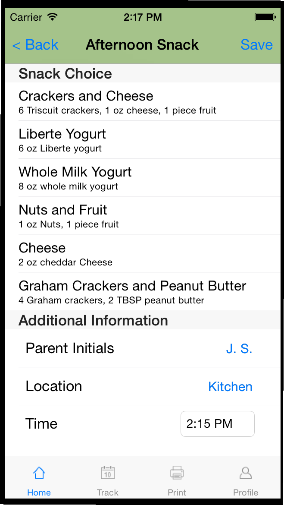
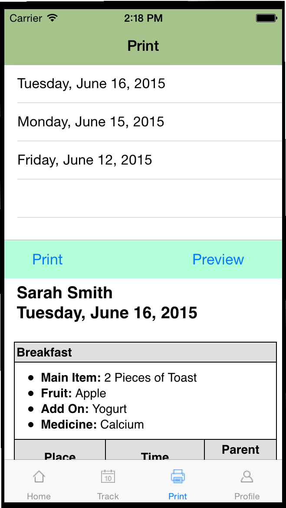
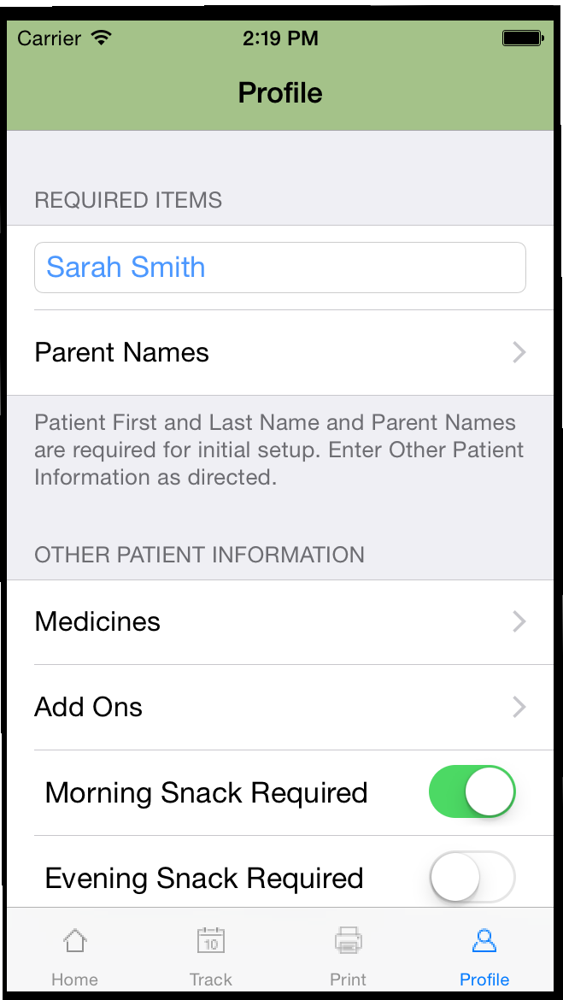

The Kartini Meal Plan Food Journal App was created for the internationally-known, Portland-based Kartini clinic, which specializes in treating eating disorders in adolescents.
It helps support a patient’s ordered eating by streamlining reporting for parents of patients. It also can help in building the habits of a lifetime of ordered eating for patients by providing a way to track meals after leaving treatment.
It is available for Beta Testing in TestFlight.
This release of the app contains these features:
Home Screen
The home screen has a context sensitive Log Meal button that takes the parent to the current meal in a single click. The status of the current meal is also displayed. |  |
Journal Entry
Food item and serving information is collected for each meal or snack, along with other other patient information.
This screen shows what the interface once the breakfast and fruit items have been chosen. Note: AddOn and Medicine cells are also displayed, with the green slider button indicating that the additional items have been consumed.
Track
Food item and serving information is collected for each meal or snack, along with other other patient information. This screen shows what the interface once the breakfast and fruit items have been chosen. Note: AddOn and Medicine cells are also displayed, with the green slider button indicating that the additional items have been consumed. The Track screen allows a parent to view and enter meals for an entire day or a single meal. Additional snack are also displayed here automatically if the patient needs them. |  |
Choosing a food item
Choice items are displayed with serving size information for quick reference. Select an item by tapping it.
Parent Initials, Location, and Time are all editable as well.
Printing
Printing is as simple as selecting the day’s journal entry and tapping print.
The preview button allows quick review of a day’s items.
Patient Profile Setup
Profile setup is quick and easy. Information about the patient and prescribed medicines, extra snacks and AddOns is used to tailor the meal log entry screens to the patient’s needs.
